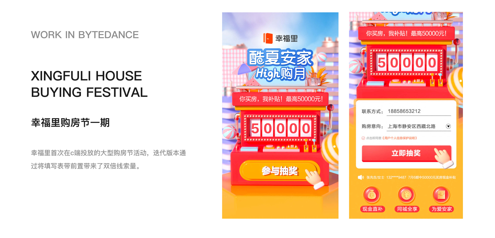

NO.1
项目概览
我的角色：主视觉设计师，我在项目中主要负责产品线内的 3D 视觉工作，根据不同业务目标完成活动主视觉、落地页物料、宣发长图及数据型视觉内容，帮助业务在有限时间内快速完成上线与传播。

我的角色：主视觉设计师，我在项目中主要负责产品线内的 3D 视觉工作，根据不同业务目标完成活动主视觉、落地页物料、宣发长图及数据型视觉内容，帮助业务在有限时间内快速完成上线与传播。
统一视觉表达：在品牌基调下，统一活动 3D 物料的色彩、版式、标题层级和信息呈现方式，减少不同业务活动之间的视觉割裂感。
优化信息传达：针对优惠、权益、购房节抽奖、区域房价等内容梳理信息优先级，让用户更快识别核心利益点。
支持业务上线：面向直播、活动、数据内容等不同需求，快速输出可落地方案，保证业务在有限周期内完成上线与传播。




通过这批业务视觉设计，幸福里多个核心业务场景形成了更统一的视觉表达，包括直播购房、VR 看房、购房节活动和房价数据内容等。
相关物料支持了线上活动上线、业务宣发和用户教育，也让我积累了从“单张视觉表现”到“业务信息转化表达”的设计经验。
相比后续更系统的产品 UI 项目，这段经历让我更早接触到真实业务中的增长诉求，也训练了我在复杂信息、紧急排期和多方需求下快速产出可落地方案的能力。